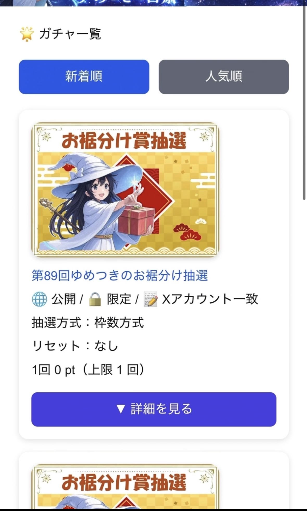
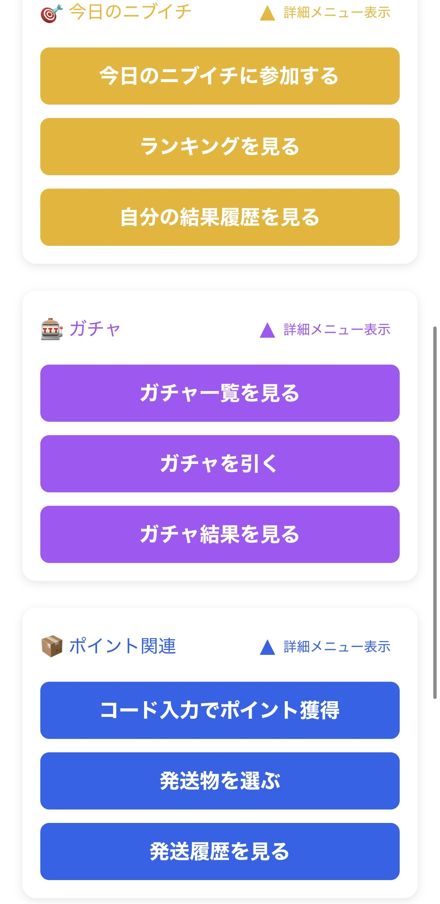
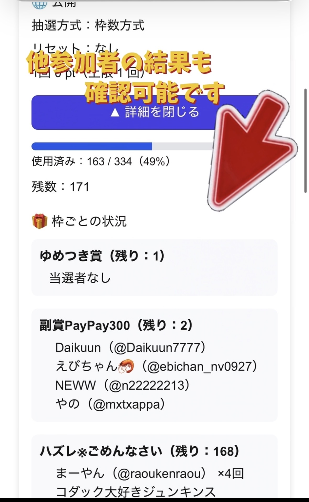

登録したメールアドレスとパスワードでログインします。
01 / START
ガチャは4ステップで楽しめます
ホーム画面の「ガチャ」メニューからスタート。開催中の企画を選び、条件を確認して抽選結果を受け取ります。
「ガチャ一覧を見る」から開催中のガチャを確認します。
必要ポイント、回数上限、参加条件を確認します。
結果を確認し、対象商品はその場で発送希望を選びます。
02 / FIND
まずは「ガチャ一覧を見る」へ
一覧では、ガチャの画像・タイトル・公開条件・抽選方式・必要ポイント・回数上限をまとめて確認できます。

新着順・人気順で探せます
気になるカードの「詳細を見る」を押すと、残りの枠や景品ごとの当選状況も確認できます。
- ホームの「ガチャ」メニューを開く
- 「ガチャ一覧を見る」を選ぶ
- 新着順・人気順を切り替えて探す
- 「詳細を見る」で内容を確認する
週間のお裾分け企画に参加した方へ：
メイン当選の「ゆめつき賞」はアプリのガチャで決まります。企画への参加だけで終わらず、忘れずにガチャまで引きましょう。
メイン当選の「ゆめつき賞」はアプリのガチャで決まります。企画への参加だけで終わらず、忘れずにガチャまで引きましょう。
03 / CHECK
便利な「引けるガチャを確認する」
一覧上部の確認ボタンを押すと、現在のポイントや参加条件をもとに、自分が今引けるガチャを確認できます。
ガチャ一覧の便利機能
参加条件を満たしているか
ポイントが足りているか
回数上限に達していないか
期限内かどうか
🌐
公開一覧から参加できる一般公開ガチャ
🔒
限定・コード案内された専用コードの入力が必要
⭐
サブスク限定サブスクライバーのみ参加可能
🎯
ニブイチ的中者限定前日のニブイチ的中者が対象
✍️
Xアカウント一致企画の対象リストと登録Xアカウントが一致する方
「引けない」と表示されたときは
表示される理由をご確認ください。ポイント不足、コード未入力、対象Xアカウントの不一致、回数上限、期限切れなどが考えられます。
表示される理由をご確認ください。ポイント不足、コード未入力、対象Xアカウントの不一致、回数上限、期限切れなどが考えられます。
04 / CODE
限定ガチャは専用コードで解放
Xの企画投稿などでガチャコードが案内された場合は、ホームの「ガチャを引く」からコードを入力します。

「ガチャを引く」を選択
- 案内されたガチャ専用コードをコピー
- ホームで「ガチャを引く」を選ぶ
- コードを入力して「ガチャを確認」
- 内容・必要ポイントを確認して抽選
コードは2種類あります。
「ポイント付与コード」はポイント関連メニューで入力します。ガチャ専用コードとは入力場所が異なるのでご注意ください。
「ポイント付与コード」はポイント関連メニューで入力します。ガチャ専用コードとは入力場所が異なるのでご注意ください。
05 / RESULT
結果と残り枠もチェック
一覧の詳細や結果ページでは、全体の使用状況、枠ごとの残数、ほかの参加者の当選状況を確認できます。

ガチャの“今”が分かります
個数限定のガチャでは、使用済み数・残数や景品枠ごとの状況が表示されます。挑戦する前後に確認すると、企画をもっと楽しめます。
- ガチャを引いたら結果を確認
- 発送対応の商品は、結果画面で発送希望を選択
- ほかの結果は「ガチャ結果を見る」で確認
- 終了した企画は「ガチャアーカイブ」へ
発送を希望する場合は、その結果画面で選択してください。
画面を離れた後や次のガチャを引いた後は発送を選べません。発送を選ばない場合は、表示された報酬ポイントが付与されます。
画面を離れた後や次のガチャを引いた後は発送を選べません。発送を選ばない場合は、表示された報酬ポイントが付与されます。
06 / ENJOY
ガチャをもっと活用するコツ
「一覧・確認・結果」を使い分けると、開催中の企画を見逃しにくくなります。
ガチャ一覧を新着順にして、新しい企画をチェック。
的中すると翌日の限定ガチャに参加できるチャンス。
クイズやコード、ニブイチなどでガチャに使えるポイントを獲得。
結果一覧で当選状況を確認し、企画の盛り上がりを共有。
07 / FAQ
よくある質問
ガチャを引くにはログインが必要ですか？
基本的にログインが必要です。新規登録では、名前、ニックネーム、Xアカウント、メールアドレス、パスワードを入力します。
一覧にあるのに引けません
必要ポイント、回数上限、公開期限、サブスク・ニブイチ・Xアカウントなどの参加条件をご確認ください。「引けるガチャを確認する」も便利です。
Xアカウント一致とは何ですか？
企画で指定された対象者リストと、プロフィールに登録したXアカウントが一致していることが参加条件です。表記違いがないかプロフィールをご確認ください。
ガチャコードとポイントコードの違いは？
ガチャコードは限定ガチャを確認・解放するためのコードです。ポイントコードはポイント獲得用で、ホームの「コード入力でポイント獲得」から入力します。
過去のガチャ結果は見られますか？
はい。「ガチャ結果を見る」では現行ガチャ、「ガチャアーカイブを見る」では終了したガチャを確認できます。
さあ、引けるガチャを見つけよう。
企画に参加したら、ガチャを引くところまでお忘れなく。